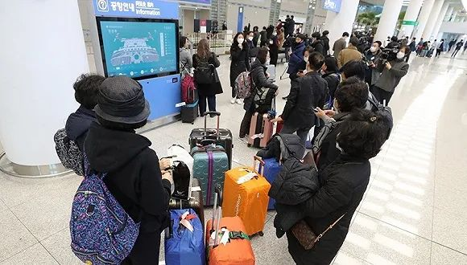

韩国疫情大暴发！累计确诊增至763例，超7700名军人被隔离
原文链接 备份链接 据韩国中央防疫对策本部24日通报，截至当天上午9时，韩国较前一天下午4时新增161例新冠肺炎确诊病例，累计确诊病例达763例，出现7例死亡病例。另据韩媒报道，一名16个月的女婴被确诊感染，这是目前韩国年龄最小的新冠肺炎 …

2月23日下午，在仁川机场，大韩航空KE957号航班搭载的韩国公民从以色列返抵韩国。图片来源：韩联社
记者：高恺仪
“
“如果我们与以色列政府有过紧密沟通，本可避免这样的波折，国际信誉的降低，会让反韩情绪直接影响到韩国经济的生命力、阻碍商务人士跨境出行，而这可能导致国外对韩国产品的反感。”
”
由于韩国境内新冠肺炎确诊病例的不断攀升，已有16个国家对韩国采取限制入境或加强检疫等措施。其中，以色列等国的“过度反应”引发了韩方的强烈不满。
截至2月25日上午9时，韩国新增新冠肺炎确诊病例60例，累计确诊893例。据韩联社24日报道，庆尚北道的39名天主教徒于2月8日至16日期间前往以色列朝圣，其中18人在21至22日被确诊感染新冠肺炎，另有12人在24日确诊，总计30人。
这一消息以及韩国连日来确诊病例的急剧增加立即引起了以色列方面的恐慌。22日，以色列宣布禁止来自日本和韩国的所有航班入境。一架韩国大韩航空KE957航班降落以色列本古里安机场后，航班上近200名韩国等国乘客被拒绝进入以色列领土，机上12名以色列乘客被直接运送回家隔离14天。
此外，以方还告知目前在以旅行的大约1000名韩国游客：避免进入公共场所，自觉隔离在旅馆中，等待有关部门采取相应措施。
23日，韩国外交部对以方拒绝韩国人入境的决定表示遗憾。后经两国协商，以色列政府于24日安排两架包机将被拒入境的约400名韩国公民送回国，所有费用由以方承担。韩国外交部表示，将继续安排后续航班，帮助韩国游客返韩。
韩国《东亚日报》24日称，嫌韩情绪在以色列正迅速扩散，当地不仅发生了针对韩国的游行示威，多家酒店和饭馆还贴出禁止韩国人进入的告示，这导致滞留在以色列的韩国游客衣食住行更加困难。
除以色列外，毛里求斯共和国近日也对韩国人采取入境管制措施。韩国外交部官员表示，由于抵达毛里求斯的韩国人中有发烧等症状者，因此毛里求斯政府暂缓这些人员的入境。韩国媒体称，这其中包括17对刚刚完婚的韩国夫妇。
韩国外长康京和24日在联合国日内瓦办事处接受采访时表示，以色列政府采取过度应对措施，限制入境和将已入境的人员赶出去是不同层次的措施，韩方正通过驻外外交机构与当地政府保持紧密沟通。
截至24日，已有包括以色列、巴林和约旦在内的7个国家禁止由韩国前来的外国人入境。另有文莱、英国和哈萨克斯坦等9个国家强制韩国游客在隔离设施中进行体检。美国则将其旅行建议的级别从“正常预防措施”提高到“更加谨慎”。
韩国《中央日报》25日发表社论称，外国政府希望确保本国人民的安全而采取一定措施无可厚非，但实施入境禁令是另一回事，他们必须保护韩国旅客的人权。在这个方面，以色列和毛里求斯的举措令人非常失望。“我们不能强迫其他国家终止其入境禁令，但我们的政府必须尽最大努力来减少这种不合理的歧视行为。”
“如果我们政府与以色列政府有过紧密沟通，本来可以避免出现这样的波折，”文章说，“国际信誉的降低，会让反韩情绪直接影响到韩国经济的生命力、阻碍商务人士跨境出行，而这可能导致国外对韩国产品的反感。”

原文链接 备份链接 据韩国中央防疫对策本部24日通报，截至当天上午9时，韩国较前一天下午4时新增161例新冠肺炎确诊病例，累计确诊病例达763例，出现7例死亡病例。另据韩媒报道，一名16个月的女婴被确诊感染，这是目前韩国年龄最小的新冠肺炎 …
原文链接 备份链接 世界卫生组织官员对韩国和伊朗等地爆发新冠病毒疫情表示担忧，但表示情况尚未上升到大流行病的程度。在美欧金融市场，这一模式已变得清晰：新增确诊病例数=增加的市场恐慌=疲弱的资本市场。这一模式会否必然在中国出现，尚待观察 …
原文链接 备份链接 意大利米兰街头。图片来源：半岛电视台 “ 全球新冠肺炎疫情播报，持续更新。 ” （本文持续更新中，点击左下角阅读原文，实时跟踪国际疫情动态。文中段首所示时间为本文更新时间。） 意大利 0800 【意大利新冠肺炎死亡病例 …
原文链接 备份链接 疫情发展 1.韩国确诊激增至 833 例，多数为群聚感染。2 月 24 日下午 4 点，据「韩国中央防疫对策本部」发布，韩国确诊激增至 833 例，累积 7 人死亡， 24 日当天确诊了 231 例。其中，至少 458 …
原文链接 备份链接 仁川国际机场。图片来源：Yonhap 记者：潘金花 “ 文在寅强调，“最大程度封锁”措施并非封堵和围困该地区，而是最大限度阻断疫情扩散，有关部门需争取使疫情拐点在本周之内到来。 ” 韩国中央防疫对策本部25日通报说，截 …